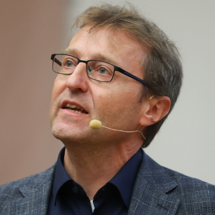

Representations across scales
When should scientific systems be modeled as geometric graphs, interaction networks, heterogeneous knowledge graphs, or combinations of these?
2026 ELLIS UnConference Session
This afternoon session brings together machine learning researchers and domain scientists working across molecular graphs, interaction networks, and scientific knowledge graphs. It will identify methods and evaluation practices that transfer across these scales and seed collaborations around scientific questions that no single graph community can address alone.
Graphs provide a shared abstraction for scientific systems that differ sharply in scale. Molecular graphs encode atoms, bonds, and geometry; biological and social networks represent interacting agents; and scientific knowledge graphs connect claims, experiments, publications, and provenance.
These communities often develop in parallel: geometric deep learning focuses on physical structure and symmetry, network science on collective dynamics, and knowledge graph research on heterogeneous entities and typed relations. Yet they face common questions about built-in structure, uncertainty and missing data, moving between local and global scales, and telling discovery apart from benchmark shortcuts.
“How can learning on graphs produce scientific evidence or hypotheses that domain experts can use?”
When should scientific systems be modeled as geometric graphs, interaction networks, heterogeneous knowledge graphs, or combinations of these?
How can inductive biases, generative methods, language models, and human-in-the-loop tools support graph-based scientific reasoning?
How can novelty, validity, uncertainty, provenance, and experimental usefulness complement predictive benchmark scores?
Can evidence from literature and databases guide molecular or physical models, and can simulation or experiments update higher-level scientific graphs?

Steffen StaabUniversity of StuttgartKnowledge representation, machine learning, and knowledge-based AI for science. Philipp BennerFederal Institute for Materials Research and Testing (BAM)Statistics and machine learning for materials science, including graph neural networks for crystal structures and materials discovery.Introduction.
Position statements from panelists.
Moderated panel discussion.
Audience questions and open discussion.
Conclusion.
Coffee break.
Poster session — contributed posters from the Call for Posters.
We invite researchers to present a poster at the poster session (16:30–18:30, Dec 8) on the topics of this session. Submissions are a short abstract (max. 2,000 characters). Ongoing and previously published work are both welcome; submissions are non-archival.
Contact: log4science@googlegroups.com (Please check your spam folder for replies!)